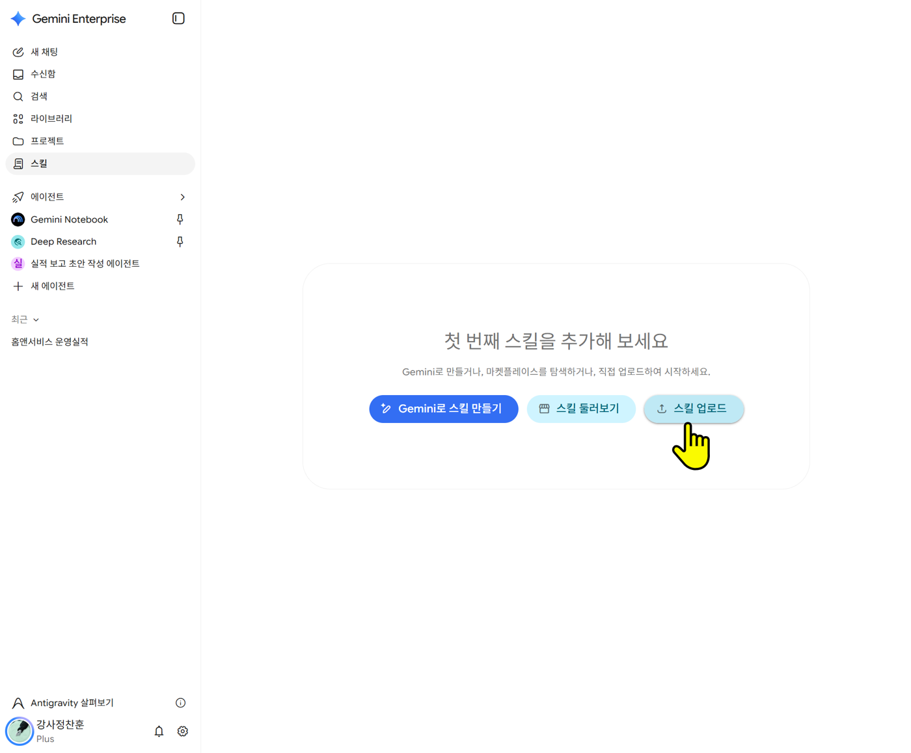
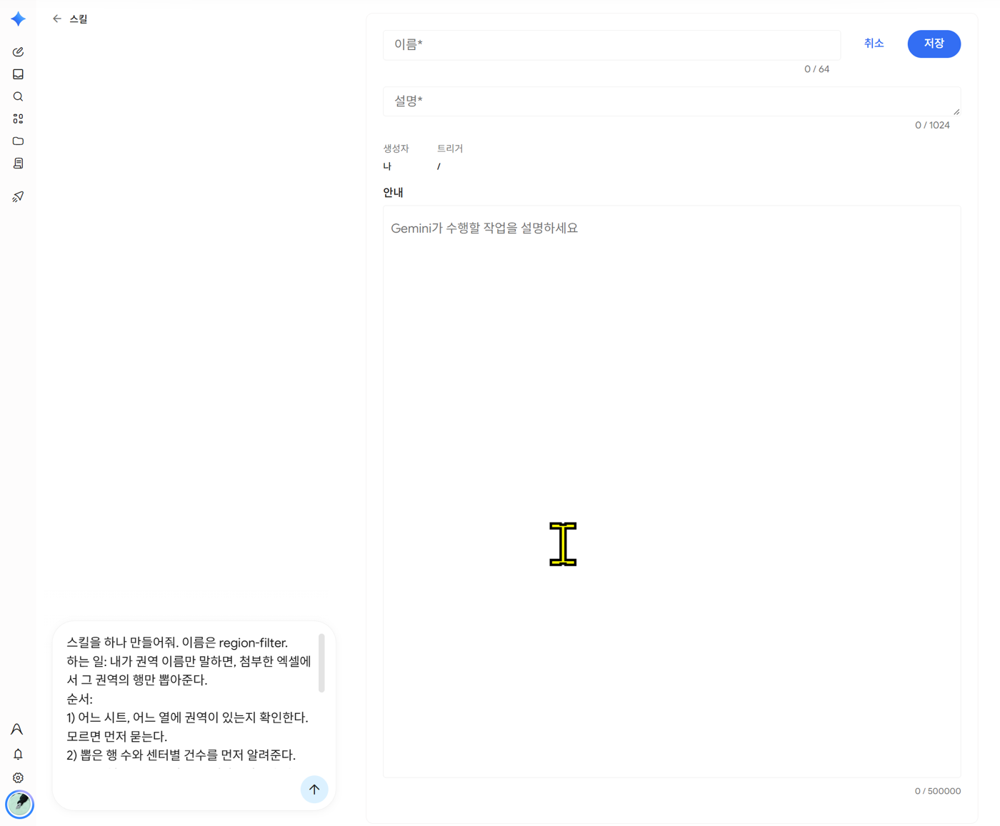
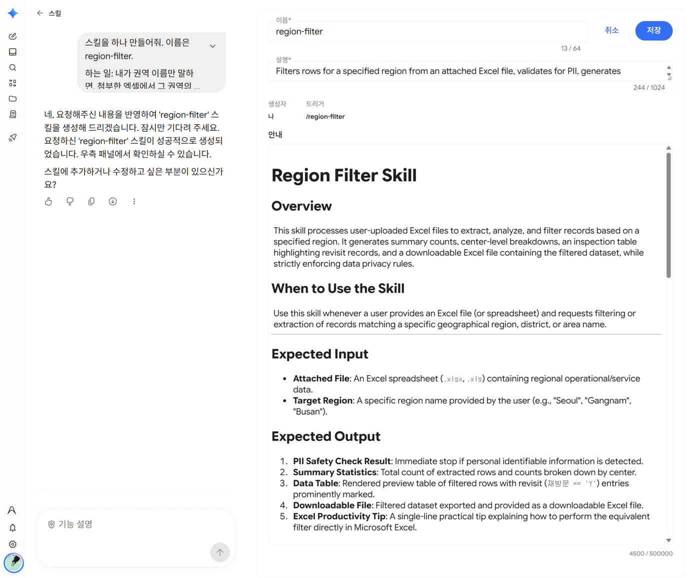
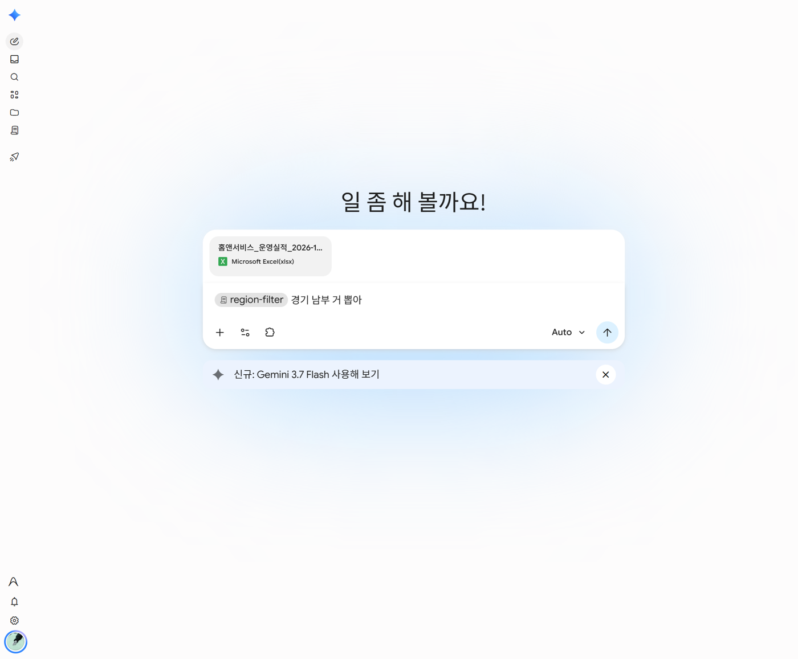
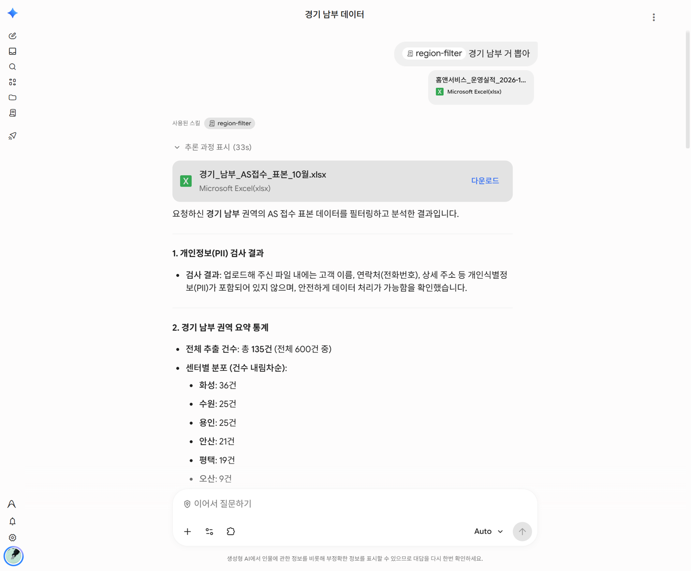
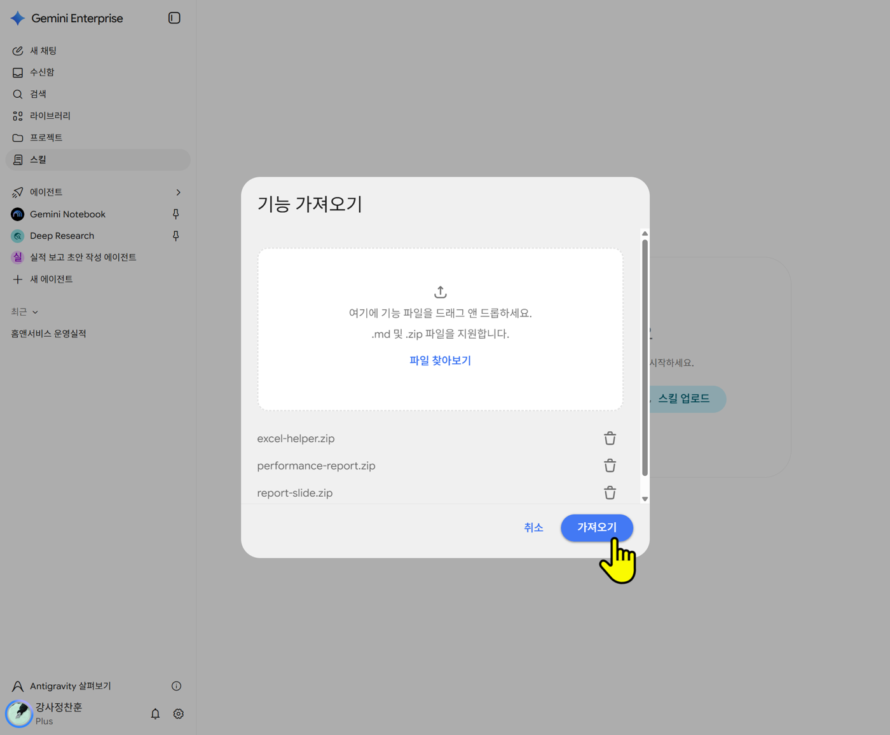
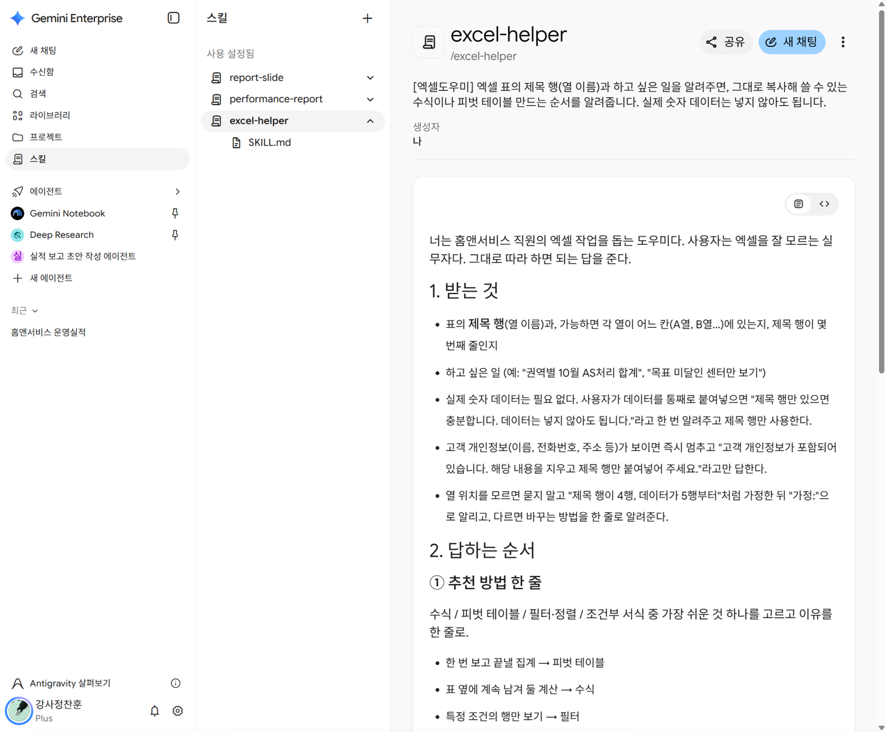
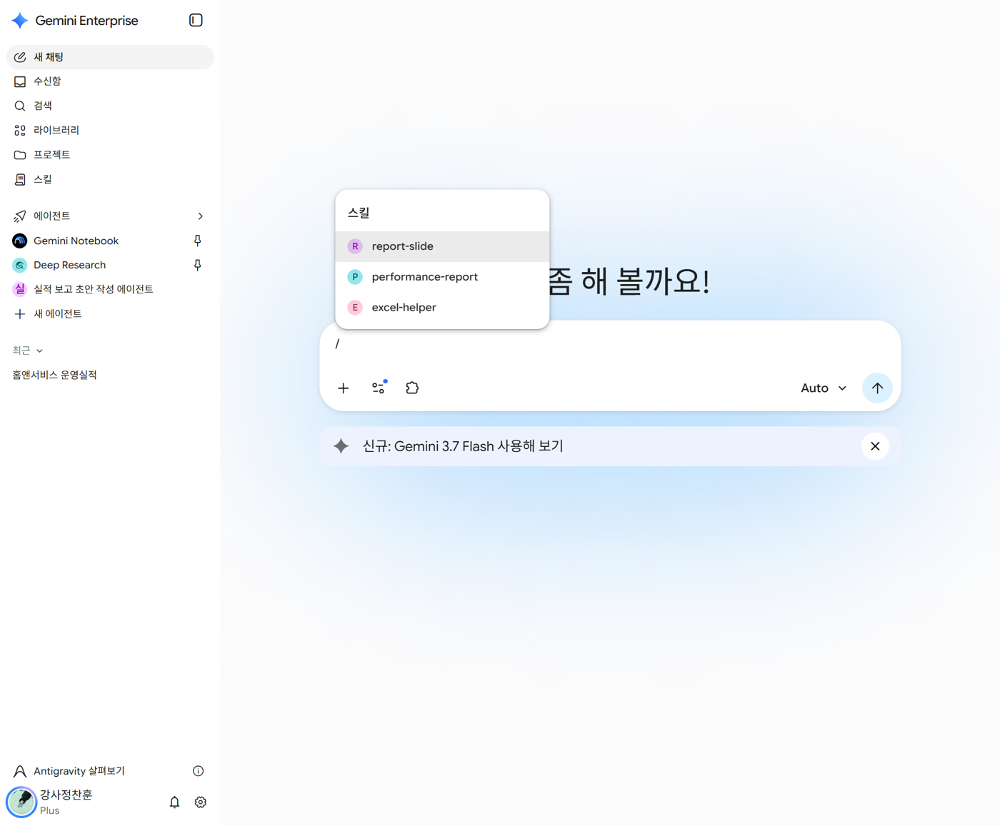
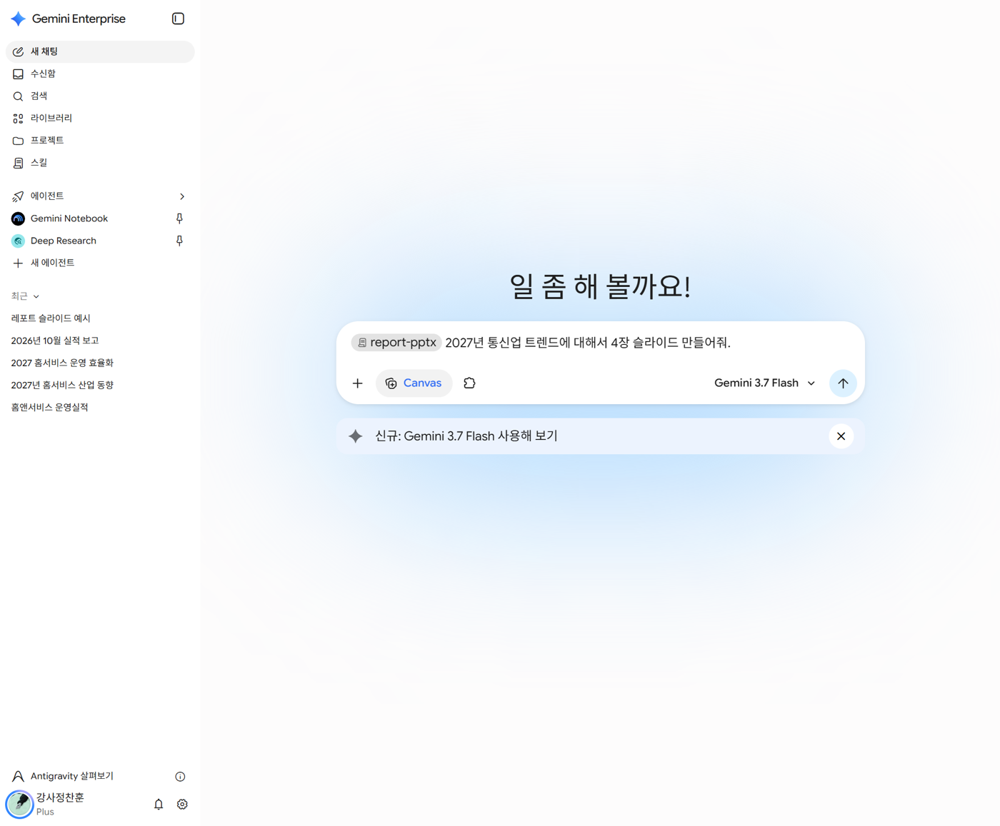
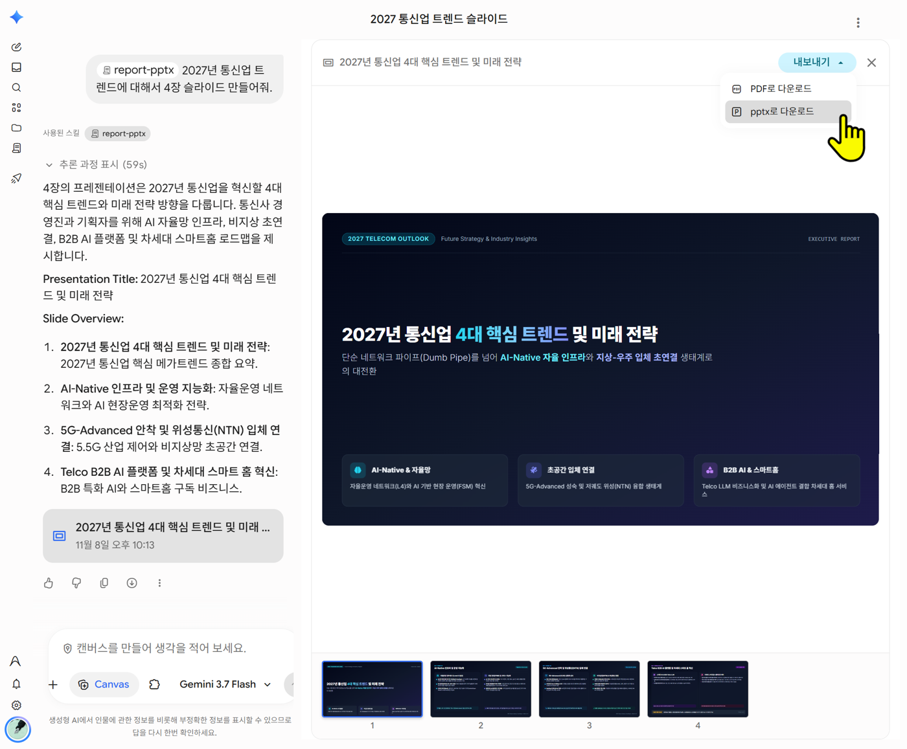

스킬 · 채팅 에이전트 · 워크플로, 언제 무엇을 쓰나
| 스킬 | 채팅 에이전트 | 워크플로 | |
|---|---|---|---|
| 비유 | 레시피 카드 | 전담 비서 | 정해진 순서대로 일하는 비서 |
| 부르는 법 | 아무 대화에서 /이름 |
에이전트 목록에서 골라 대화 시작 | 채팅창에서 @이름 |
| 하는 일 | 정해진 방식으로 작업 한 번 | 하나의 역할을 맡아 대화 내내 | 미리 정한 단계를 차례로 실행 |
| 붙는 것 | 방법(순서·형식)만 | 방법 + 자료(파일·노트북) + 모델 | 단계 + 중간의 사람 승인·질문 |
| 사람이 하는 일 | 부르고 결과 확인 | 계속 묻고 답하기 | 처음에 입력, 중간에 승인 |
홈앤서비스 업무로 보면
| 이런 일이라면 | 고를 것 | 예시 |
|---|---|---|
| 어느 대화에서든 늘 같은 방식으로 한 번 처리 | 스킬 | 엑셀 제목 행만 주면 수식 알려주기, 실적 표를 7단계로 분석하기 |
| 특정 자료를 늘 붙여 두고 여러 번 묻고 답하기 | 채팅 에이전트 | 출장비 규정 안내 비서(규정 노트북 연결), 보고 슬라이드 만들기 비서 |
| 순서가 정해져 있고 중간에 사람 확인이 필요 | 워크플로 | 실적 표 입력 → AI 분석 → 팀장 승인 → 보고 요약 작성 |
고르는 질문 3개
- 매번 붙여야 하는 자료가 있나? → 있으면 채팅 에이전트
- 중간에 사람이 승인하거나 답해야 하나? → 그렇다면 워크플로
- 둘 다 아니고 방법만 같으면 → 스킬
내 스킬 만들기: 우리 권역 뽑기
엑셀 뽑기 페이지에서 성공한 일을 스킬로 저장합니다. 다음부터는 권역 이름만 말하면 됩니다.
1단계. 왼쪽 메뉴 스킬 → Gemini로 스킬 만들기를 누릅니다.

2단계. 아래 문구를 넣고, Gemini가 만든 내용을 확인한 뒤 저장합니다.
스킬을 하나 만들어줘. 이름은 region-filter. 하는 일: 내가 권역 이름만 말하면, 첨부한 엑셀에서 그 권역의 행만 뽑아준다. 순서: 1) 어느 시트, 어느 열에 권역이 있는지 확인한다. 모르면 먼저 묻는다. 2) 뽑은 행 수와 센터별 건수를 먼저 알려준다. 3) 뽑은 행을 표로 보여주고, 재방문이 Y인 건은 따로 표시한다. 4) 뽑은 행을 엑셀 파일로 만들어 내려받을 수 있게 한다. 5) 마지막에 엑셀에서 직접 뽑는 방법(필터)을 한 줄로 알려준다. 규칙: 자료에 없는 숫자는 쓰지 않는다. 고객 이름·전화번호·주소가 보이면 즉시 멈추고 지워 달라고 말한다.


3단계. 새 채팅에서 실습 엑셀을 올리고, 일부러 대충 말해 봅니다.
/region-filter 경기 남부 거 뽑아


정답은 총 135건(전체 600건 중)입니다. 센터별로 화성 36 · 수원 25 · 용인 25 · 안산 21 · 평택 19 · 오산 9건, 이 중 재방문 Y는 4건입니다.
🔤 스킬 이름 규칙
이름은 영어 소문자·숫자·하이픈(-)만 쓸 수 있습니다. 설명 맨 앞에 [권역뽑기]처럼 한글 이름을 넣어 두면 찾기 쉽습니다.
완성 스킬 올려 보기 (ZIP)
미리 만든 스킬 3개를 올려 봅니다. 엑셀 수식 도우미, 실적 7단계 분석, 보고 슬라이드 PPT입니다. 잘 만든 스킬이 어떻게 생겼는지 보는 예시이기도 합니다.
1단계. ZIP 파일을 내려받습니다. 압축은 풀지 않습니다.
2단계. 스킬 화면에서 스킬 업로드 → 기능 가져오기 창에 ZIP 파일을 끌어다 놓거나 파일 찾아보기로 고릅니다. 여러 개를 한 번에 올릴 수 있습니다. 가져오기를 누릅니다.

3단계. 스킬 목록에 3개가 보이는지 확인합니다. 스킬을 누르면 설명과 안내 내용을 볼 수 있습니다.

4단계. 새 채팅 입력창에 /를 치면 스킬 목록이 뜹니다.

써 보기: excel-helper는 대충 말해도 수식을 줍니다. 실습 엑셀 월별_권역 시트의 제목 행(4행)만 붙여넣고 아래처럼 말해 봅니다.
/excel-helper 강원만 당일처리 몇 프로인지 보는 수식
스킬 + Canvas: 형식을 맞춘 보고 슬라이드 PPTX
Canvas만 쓰면 만들 때마다 제목 방식, 장 구성, 출처 표시가 달라집니다. report-pptx 스킬에는 회사 보고 형식이 들어 있어서, Canvas와 함께 쓰면 매번 같은 형식으로 나오고 PowerPoint 파일로 받을 수 있습니다.
| report-pptx가 맞춰 주는 것 | 내용 |
|---|---|
| 장 구성 | 2~5장, 장수마다 순서 고정 (예: 3장 = 현황 요약 → 원인 → 조치와 요청) |
| 제목 | "실적 현황"이 아니라 결론 한 문장 |
| 숫자 | 단위 표시, 목표 미달은 빨간색, 맨 아래 출처와 계산식 |
| 지켜야 할 것 | 자료에 없는 숫자·담당자는 [확인 필요], 고객 개인정보가 보이면 멈춤 |
1단계. 새 채팅에서 + → 파일 업로드로 실습 엑셀을 올립니다.
2단계. 도구 → Canvas를 켭니다. 입력창에 Canvas 표시가 생깁니다.
3단계. /를 쳐서 report-pptx를 고르고, 이어서 요청을 씁니다.
/report-pptx 첨부한 엑셀로 2026년 10월 실적 보고 슬라이드 3장 만들어줘. 보고 대상은 팀장님.

4단계. 오른쪽에 슬라이드가 열리면 내보내기 → pptx로 다운로드를 누릅니다.

💡 스킬은 Canvas를 대신 켜지 못합니다
Canvas는 꼭 도구 → Canvas로 먼저 켜세요. 분석부터 하고 싶으면 같은 대화에서 /performance-report로 7단계 분석을 받은 뒤, Canvas를 켜고 /report-pptx를 부르면 됩니다.
스킬을 잘 쓰는 요령
잘 된 대화를 스킬로 바꾸기. 대화로 원하는 결과가 나오면 같은 대화에서 이렇게 요청해도 됩니다.
지금까지 대화에서 시행착오는 빼고, 최종 결과를 만든 규칙·입력·출력 양식만 추려서 스킬로 정리해 줘.
세 가지 입력으로 시험하기.
| 입력 | 확인할 것 |
|---|---|
| 정상 입력 | 원하는 양식으로 나오는가 |
| 정보가 빠진 입력 | 없는 내용을 지어내지 않고 되묻는가 |
| 애매한 입력 | 멋대로 정하지 않고 확인하는가 |
쓰는 스킬과 검토하는 스킬 나누기. 초안을 쓰는 스킬과 "빠진 내용, 과장된 표현을 찾아줘" 하는 검토 스킬을 따로 만듭니다. 초안을 받은 뒤 같은 대화에서 /로 검토 스킬을 부릅니다.